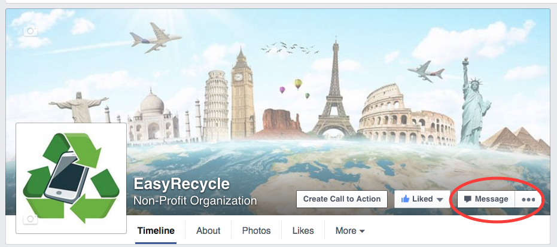
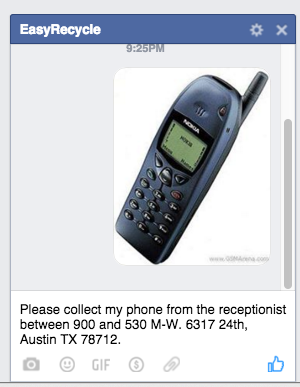

Welcome to our innovative solution to recycling cellphones!
Option 1: Recycle with Facebook
Visit our Facebook page, facebook.com/EasyRecycle. Alternately, you can search for EasyRecycle on Facebook (the first suggestion is our page). Once you are there, click on the message button, compose a message, and you are done! See the figure below for an example of how to message.

You can also message us at EasyRecycle from Facebook Messenger on your mobile.

After picking up the phone, EasyRecycle will post a thank you to your page, so your friends can see you’ve been a good citizen of the Earth!
Option 2: Recycle with Google Forms
Add your information to this Google Form. We will monitor it, and come by to pickup your phone. (In the longer term, we hope the technology will be used by cities to collect data.)
Option 3: Do-It-Yourself
Follow the links on the navbar to learn how to recycle your phone on your own. Examples include location of drop-off boxes, contact numbers for your city’s service, and suggestions on how to monetize your phone. Here’s a map to the City of Austin’s phone recyling center.
Currently, this project is limited to the 78759 zip in NW Austin.